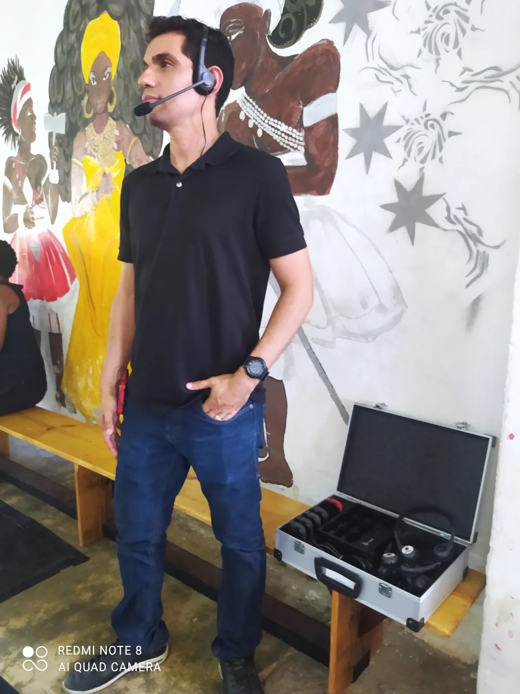
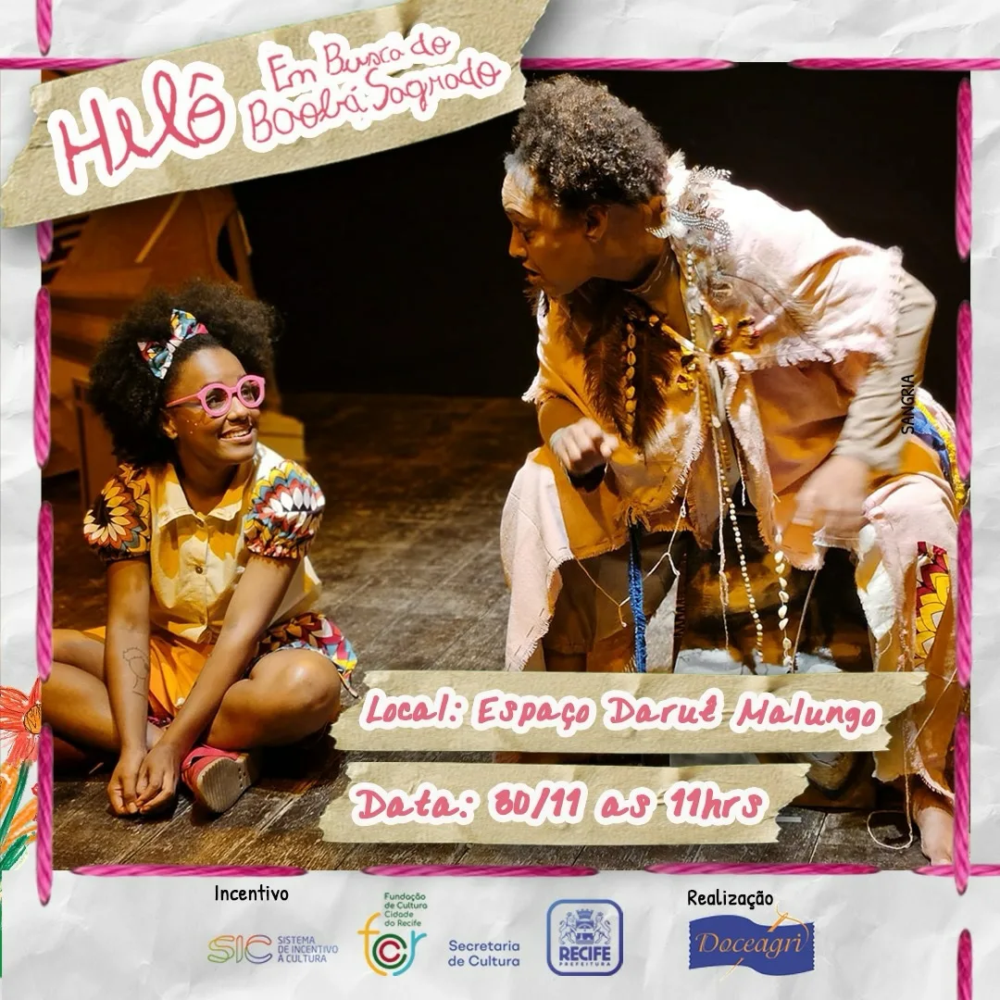
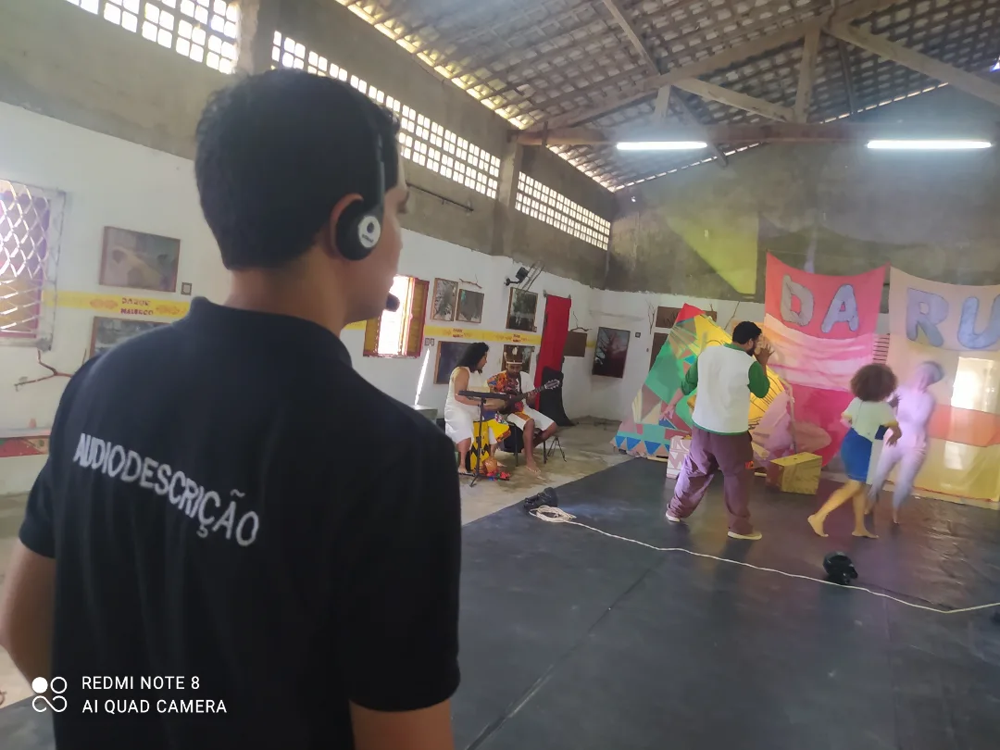
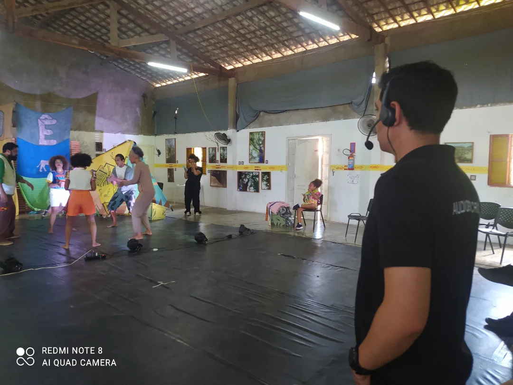
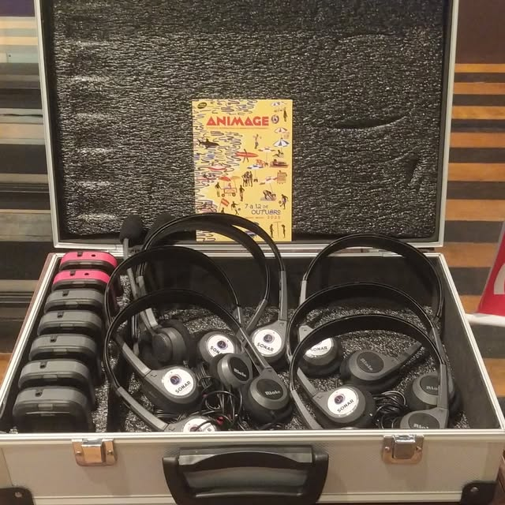
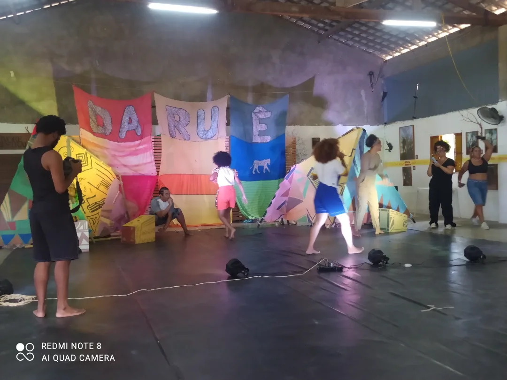

O som e a cena que todos podem sentir.
Acessibilidade audiovisual de alta fidelidade para festivais, cinema e teatro.
Audiodescrição sensível para cinema e palco, LSE especializada de sonoplastia e foley para animações, tradução simultânea, janela de Libras e visitas guiadas. Conformidade rigorosa com a ABNT NBR 15290 e editais públicos (Funcultura, Lei Paulo Gustavo, PNAB e ANCINE).

Em Cena com a Sonar
Confira registros da nossa atuação prática em mostras internacionais, festivais de cinema, espetáculos teatrais e mediação acessível.

Teatro & Palco • SIC RecifeEspetáculo "Helô Em Busca do Baobá Sagrado"
Audiodescrição ao vivo e mediação no Espaço Daruê Malungo. Projeto incentivado pelo SIC (Sistema de Incentivo à Cultura) e Prefeitura do Recife.

Audiodescrição ao VivoNarração Cênica e Tradução Sensorial
Tradução das expressões, movimentações, iluminação e figurinos para o público cego ou com baixa visão, sem interrupção das falas dos atores.
Central Sem Fio para Plateias
Estrutura móvel completa com fones individuais, transmissores de rádio frequência multicanal e higienização para grandes eventos e festivais.

Mediação de PúblicoFormação de Público & Acolhimento
Garantia de acolhimento atitudinal em salas de espetáculo e mostras de cinema, democratizando o acesso à cultura para todas as pessoas.

Cinema & AnimaçãoFestival Animage 2026
Acessibilidade integral em 20 sessões de curtas em 10 noites de festival, com LSE de sonoplastia de alta precisão e visitas mediadas.

Espaço Daruê MalungoDecupagem Técnica de Palco
Trabalho prévio de alinhamento com a direção e elenco para roteirização detalhada de cada movimento, gesto e efeito acústico da obra.
O que o público surdo realmente enxerga na tela
Em curtas de animação e cinema autoral mudo, a narrativa acontece nos ruídos e na música. Compare uma legenda comum com a LSE da Sonar.
O filme é tratado como se fosse silêncio absoluto. O espectador é excluído da experiência sensorial da cena.
Cada ruído, impacto, suspense e respiração ganham vida visual acessível, preservando a intenção da direção.
Serviços Especializados de Acessibilidade
Soluções completas para produtoras de audiovisual, mostras, festivais e editais culturais.
Audiodescrição para Filmes e Séries
Roteirização e locução de AD imersiva nos circuitos pernambucano, nordestino, nacional e internacional.
- Curadoria e validação com consultores com deficiência visual
- Entrega em track de áudio mixado ou separado (WAV/MP3/SRT)
- Conforme ABNT NBR 16452 e ANCINE
LSE com Sonoplastia & Foley
Legenda para Surdos e Ensurdecidos com mapeamento milimétrico de ruídos, impactos, música e reações acústicas.
- Decupagem especializada para curtas e animações mudas
- Arquivos .SRT, .VTT e renderização em Burned-in
- Estrita conformidade com a ABNT NBR 15290
Janela de Libras & Tradução Simultânea
Intérpretes de Libras fluentes e certificados, com estúdio próprio em chroma-key e iluminação broadcast.
- Enquadramento regulamentar ANCINE (tamanho e posição)
- Tradução simultânea para debates e cerimônias presenciais
- Gravação e inserção final em Master ProRes / MP4
Visitas Guiadas & Mediação Cultural
Mediação acessível para museus, galerias e mostras de arte com equipamentos portáteis de transmissão de áudio.
- Receptores de áudio sem fio multicanal próprios
- Roteiro tátil e mediação sensorial de obras de arte
- Treinamento de recepção e acessibilidade atitudinal
Oficinas & Formação em Acessibilidade
Capacitação de equipes de produção, estudantes e instituições culturais na elaboração de projetos acessíveis.
- Workshops práticos de Audiodescrição e LSE
- Sensibilização e etiqueta no atendimento a PCDs
- Elaboração de planos de acessibilidade para editais
Consultoria & Planilhas para Editais
Adequação de projetos para atender aos critérios obrigatórios de acessibilidade dos editais de fomento.
- Dimensionamento orçamentário conforme cotas de editais
- Declaração de anuência e cartas de compromisso da Sonar
- Compatibilidade com Funcultura, LPG, PNAB e FSA/BRDE
Simulador de Valores de Acessibilidade
Estime o investimento para a metragem do seu filme, curta, longa ou festival com base nos valores de mercado da Sonar.